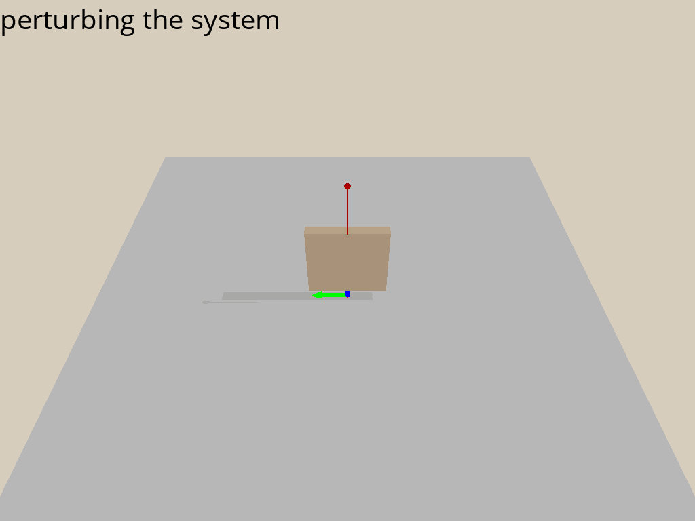

L11: Optimal Control
Hao Su
Spring, 2021
Agenda
Fully-actuated v.s. Under-actuated Systems
Review: Control
- A desired trajectory to follow: $(\q_{d}, \dotq_d, \ddotq_d)$
- Forward dynamics $\ddotq=\rm{FD}(\mv{F}; \q, \dotq)$
- Inverse dynamics $\mv{F}=\rm{ID}(\ddotq; \q, \dotq)$
- We use control to deal with delay, overshoot, or steady-state error, and ensure stability.
- Steady-state error \[ e=q-q_d \]
Review: Feedforward and Feedback Control
- We need some force to match $\ddotq_d$. This component is called the feed-forward component, which comes from $\rm{ID}(\cdot)$: \[ \mv{F}_{ff}=\rm{ID}(\ddotq_d; \q, \dotq) \]
- We also need some additional force to correct the steady-state error, which is called the feedback component: \[ \mv{F}_{fb}=M(\q)(-K_v\dot{e}-K_p e) \] where $M(\q)$ is the inertia of the system.
- The total force we exert to control the system is \[ \mv{F}=\mv{F}_{ff}+\mv{F}_{fb} \]
Review: Computed Torque Control
- Computed Torque Control: \[ \tau=M(\theta)(\ddot{\theta}_d-K_v\dot{e}-K_p e)+C(\theta,\dot{\theta})\dot{\theta}+g(\theta)\tag{1} \]
- By ID, the acceleration under this $\tau$ is \[ \tau=M(\theta)\ddot{\theta}+C(\theta,\dot{\theta})\dot{\theta}+g(\theta)\tag{2} \]
- Subtracting (2) from (1) and cancel $M(\theta)$, we get the error equation: \[ \ddot{e}+K_v\dot{e}+K_p e=0 \]
- Because $K_v, K_p\in\bb{S}^+$, by the theory of ODE, $e(t)=\mathcal{O}(e^{\alpha t})$, $\alpha\le 0$.
- We say that the computed torque control law has exponential convergence rate.
Example of Single-Joint Manipulator
(Inverted Pendulum)
Using feedback control (PID), it is very easy to control this swing-up inverted pendulum.
Limitation of PID Control
- Consider the cart-pole example.
- Our desired position is that the rod is upright straight.
- Can we control it by the computed torque law?
- Let us try the feedforward-feedback control law.
- First of all, we can only control the 1D force $f$. It is also obvious that $f_{feedforward}=0$.
- The feedback force should be \[ f_{feedback} = M(\q)(-K_v\dot{e}-K_p e) \]
- Note that $e=\q-\q_d=\bm{x\\\theta}-\bm{x_d\\\theta_d}$, thus the feedback force should be 2D. But we can only control the 1D force!
- Our convergence analysis does not apply here.
- Turns out that tuning the PID for cart pole is hard.

A schematic drawing of the inverted pendulum on a cart. The rod is considered massless.
Underactuated Control Differential Equations
- Notions:
- Second-order control dynamical system: $\ddotq=f(\q, \dotq, \u, t)$
- Control vector: $\mv{u}\in\cal{U}$
- Underactuated Control Differential Equations:
A second-order control differential equation described by the equations \[ \ddotq=f(\q, \dotq, \u, t) \] is fully actuated in state $\mv{x}=(\q,\dotq)$ and time $t$ if the resulting map $f$ is surjective: for every $\ddotq$ there exists a $\u$ which produces the desired response. Otherwise, it is underactuated (in $\mv{x}$ at time $t$).
- For example, our cart pole system is underactuated (1-D $f$ has to control $\ddot{x}$ and $\ddot{\theta}$).
The Power of Underactuated System:
A Passive Dynamic Walker Example
A 3D passive dynamic walker by Steve Collins and Andy Ruina at Cornell.
Many Interesting Problems in Robotics are Underactuated
- Legged robots are underactuated. Consider a legged machine with $N$ internal joints and $N$ actuators. If the robot is not bolted to the ground, then the degrees of freedom of the system include both the internal joints and the six degrees of freedom which define the position and orientation of the robot in space. Since $\u\in\bb{R}^N$ and $\q\in\bb{R}^{N+6}$, the system is underactuated.
- (Most) Swimming and flying robots are underactuated. The story is the same here as for legged machines. Each control surface adds one actuator and one DOF. And this is already a simplification, as the true state of the system should really include the (infinite-dimensional) state of the flow.
- Robot manipulation is (often) underactuated. Consider a fully-actuated robotic arm. When this arm is manipulating an object with degrees of freedom (even a brick has six), it can become underactuated.
Concepts and Main Theoretical Results
of Optimal Control
Control as Optimization Problem
- Key idea: Design an optimization problem whose solution is the control signal.
- Example
-
Consider the simple second-order control dynamics system: \[ \ddot{q}=u, \quad |u|\le 1 \]
- The task is to design a control system, $u=\pi(\x, t), \x=[q, \dot{q}]^T$ to regulate this brick to $\x=[0, 0]^T$.
- Optimization problem:
- Minimum time: $\min_{\pi} t_f$ subject to $\x(t_0)=\x_0, \x(t_f)=0$.
- Quadratic cost: $\min_{\pi} \int_{t_0}^{\infty} \x^T(t) \mv{Q} \x(t) \d{t},\ \mv{Q}\succ 0.$
-
Transition Function
\[ \dot{\x}=f(\x, \u)\tag{transition function} \]- Example 1 — Brick: \[ \bm{\dot{q}\\\ddot{q}}= \bm{0 & 1\\0 & 0}\bm{q\\\dot{q}}+\bm{0\\1}u, \] which is of $\dot{\x}=A \x + B\u$ form.
- Example 2 — Manipulator : \[ \bm{\dot{\theta}\\\ddot{\theta}}= \bm{0 & I\\0 & M^{-1}_{\theta}}\bm{\theta\\\dot{\theta}}+\bm{0\\M^{-1}_{\theta}C_{\theta, \dot{\theta}}}\tau+\bm{0\\-M^{-1}_{\theta}g_{\theta}}, \] which is of $\dot{\x}=A_{\x} \x + B_{\x}\u+C_{\x}$ form. Let $\x'_{\x}=\x+A^{-1}_{\x}C_{\x}$, then $\dot{\x'}=A_{\x}\x'+B_{\x}\u$.
Transition Function
\[ \dot{\x}=f(\x, \u)\tag{transition function} \]- Understanding the linear transition function $\dot{\x}=A\x+B\u$ is fundamentally important, because locally it approximates any differentiable transitions.
- For example, we do Taylor's expansion around stationary state $\x^*$, $0=f(\x^*, \u^*)$ .
- Stationary state: both velocity and acceleration are $0$.
- Take $\x'=\x-\x^*, \u'=\u-\u_*$, plug in the transition function, and use Taylor's expansion to approximate $f$ around $\x^*$ and $\u^*$, then \[ \dot{\x'}\approx\nabla_{\x}f(\x^*,\u^*) \x' + \nabla_{\u}f(\x^*,\u^*) \u' \]
- For example, we do Taylor's expansion around stationary state $\x^*$, $0=f(\x^*, \u^*)$ .
Additive Cost
\[ \int_0^T \ell(\x(t), \u(t))\d{t}\tag{additive cost} \]- For example, the quadratic cost for the brick example is an additive cost: \[\min_{\pi} \int_{t_0}^{\infty} \x^T(t) \mv{Q} \x(t) \d{t},\ \mv{Q}\succ 0.\]
- Additive cost is a favorable choice in optimal control, because
- it admits an optimality condition of elegant form.
- in discrete case, it also implies a "dynamic programming" solution (we will see in the next lecture of reinforcement learning).
Cost-to-go Function
- Consider a time-invariant dynamic system $\dot{\x}=f(\x, \u)$ with an infinite-horizon additive cost $\int_{0}^{\infty} \ell(\x, \u)\d{t}$
- Time-invariant: $f$ and $\ell$ do not directly depend on $t$.
- Suppose that we will control the system using a policy $\u=\pi(\x)$
- The cost-to-go function at a certain starting state $\x_0$ is: \[ J^{\pi}(\x_0)=\int_{0}^{\infty} \ell(\x(t), \u(t))\d{t}\tag{cost-to-go function} \] where $\x(0)=\x_0$ and $\u(t)=\pi(\x(t))$.
- You will see that the cost-to-go-function and the value function in reinforcement learning are essentially the same thing, except that one needs to be minimized and the other maximized.
The Hamilton-Jacobi-Bellman Equation
(Optimality Condition)
- Consider a time-invariant system $\dot{x}=f(\x, \u)$ with an additive cost $\int_{0}^{\infty} \ell(\x, \u)\d{t}$, in which $f, \ell \in C^{\infty}(\cal{X}\times \cal{U})$, $\rm{Hess}(\ell)\succ 0$, $\ell(x)=0\ \rm{iff}\ x=\x^*$.
- Under some technical conditions on the existence and boundedness of solutions (see Thm 7.1 in Underactuated Robotics), a sufficient condition for the existence of optimal policy is:
$\exists J:\cal{X}\to \bb{R}\in C^{\infty}(\cal{X}), {\rm{Hess}}$$(J)\succ 0$ such that $\forall\x\in{\cal{X}}$, \[ \underset{\u\in \cal{U}}{\min}\left[\ell(\x,\u)+\left(\frac{\partial J(\x)}{\partial \x}\right)^Tf(\x, \u)\right]=0\tag{HJB equation} \]
- $J(\x)$ is the cost-to-go function.
- The optimal policy is \( \pi^*(\x)=\underset{\u\in \cal{U}}{\arg\min}\left[\ell(\x,\u)+\left(\frac{\partial J(\x)}{\partial \x}\right)^Tf(\x, \u)\right] \)
The Hamilton-Jacobi-Bellman Equation
(Optimality Condition)
- The HJB equation is the continuous version of the Bellman equation in discrete dynamic programming/reinforcement learning.
- A (sloppy) justification:
- The Bellman equation (for optimal policy $\pi^*$) of the discrete problem: \[ \aligned{ J(\x_t)=\ell(\x_t,\u_t)\Delta t + J(\x_{t+1}), \mbox{ where } \frac{\x_{t+1}-\x_t}{\Delta t}=f(\x_t,\u_t)\mbox{ and }\u_t=\pi^*(\x_t) } \]
- Therefore, \[ \aligned{ 0=\ell(\x_t,\u_t)+\frac{J(\x_{t+1})-J(\x_t)}{\Delta t}&\iff 0=\ell(\x_t,\u_t)+\frac{J(\x_{t+1})-J(\x_t)}{\x_{t+1}-\x_t}\frac{\x_{t+1}-\x_t}{\Delta t}\\ &\iff 0=\ell(\x_t,\u_t)+\frac{J(\x_{t+1})-J(\x_t)}{\x_{t+1}-\x_t}f(\x_t, \u_t) } \]
- Let $\Delta t\to 0$, \( 0=\ell(\x_t,\u_t)+\left(\frac{\partial J(\x)}{\partial \x}\right)^Tf(\x, \u) \)
Linear-Quadratic Regulator
Slides are based on CH8 of Underactuated Robotics
Canonical Form
- Consider a linear time-invariant system in state-space form: \[ \dotx=A\x+B\u \] with the objective function to minimize: \[ \int_0^{\infty}\ell(t)\d{t}=\int_0^{\infty}[\x^T\Q\x+\u^T\R\u]\d{t} \] in which $\Q=\Q^T\succeq 0, \R=\R^T\succ 0$ are two designed matrices.
- Remarks about the objective function:
- The cost $\ell(\x, \u)$ is quadratic: brings in advantage in doing analysis on the HJB equation.
- The cost involves penalty for large control signals (the $\u^T\R\u$ term), which favors low energy to achieve a certain goal.
State Tracking Example
- Sometimes, we need a bit of derivation to arrive at the canonical form.
- Consider the task of tracking a desired state trajectory $\x_d(t)$. It is natural to write down the following optimization problem: \[ \aligned{ &\underset{\u\in\cal{U}}{\mbox{minimize}}&&\int_0^{\infty} (\x-\x_d)^T \Q (\x-\x_d)+\u^T \R \u } \] in which $\Q\succeq 0, \R\succ 0$, and $\dotx = A\x+B\u$.
- Introduce $\tilde{\x}=\bm{\x-\x_d\\\x_d}$, $\tilde{A}=\bm{A & A\\0& 0}$, $\tilde{B}=\bm{B\\0}$, $\tilde{\Q}=\bm{Q & 0\\0 & 0}$, and the above optimization problem becomes the canonical form: \[ \aligned{ &\underset{\u\in\cal{U}}{\mbox{minimize}}&&\int_0^{\infty} \tilde{\x}^T \tilde{\Q} \tilde{\x}+\u^T \R \u } \] in which $\Q\succeq 0, \R\succ 0$, and $\dot{\tilde{\x}} = \tilde{A}\tilde{\x}+\tilde{B}\u$.
LQR Controller (Infinite-horizon, Closed-form)
- Recall the HJB optimality condition:
$\exists J:\cal{X}\to \bb{R}\in C^{\infty}(\cal{X}), {\rm{Hess}}$$(J)\succ 0$ such that $\forall\x\in{\cal{X}}$, \[ \underset{\u\in \cal{U}}{\min} L(\x, \u)=0, \quad\mbox{where } L(\x,\u)=\ell(\x,\u)+\left(\frac{\partial J(\x)}{\partial \x}\right)^Tf(\x, \u) \]
- For our linear-quadratic system setup, it is known that $J(\x)=\x^T\S\x$.
- Let us plug this $J(\x)$ with unknown $\S$ into $L(\x,\u)$ to solve $\S$.
- Sketch:
- For some given $\x$, we first find $\u^*=\underset{\u}{\arg\min}\ L(\x,\u)$;
- Then we plug $\u^*$ back to $L(\x,\u)$ and obtain an equation system that includes $\S$
- Solve $\S$ from the equation system.
LQR Controller (Infinite-horizon, Closed-form)
Details:- By $\ell(\x,\u)=\x^T\Q\x+\u^T\R\u$, $f(\x,\u)=A\x+B\u$, and $J(\x)=\x^T\S\x$, \[ L(\x,\u)=\ell(\x,\u)+\left(\frac{\partial J(\x)}{\partial \x}\right)^Tf(\x, \u)=\x^T\Q\x+\u^T\R\u+2\x^T\S A\x+2\x^T\S B\u \]
- To solve $\u^*$ given $\x$, we have \( \frac{\partial L}{\partial \u^*}=2\R\u^*+2B^T\S\x=0 \) \[ \therefore \u^*=-\R^{-1}B^T\S\x=-\K\x \]
- Plug $\u^*$ back into $L$ and by $\x^T\S A\x=\x^TA^T\S \x$, \[ \min_{\u}L(\x,\u)=\x^T(\Q-\S B\R^{-1}B^T\S+\S A+A^T\S)\x \]
- Since $\min_{\u} L(\x,\u)\equiv 0, \forall \x\in\cal{X}$, it must be true that \[ \Q-\S B \R^{-1} B^T\S+\S A+A^T \S=0\tag{algebraic Riccati equation} \]
Algebraic Riccati Equation
Our goal is to solve $\S$ from the algebraic Riccati equation: \[ \Q-\S B \R^{-1} B^T\S+\S A+A^T \S=0 \] The existence of solution depends on a so-called "controllable" condition.- Controllable:
- A system is said to be controllable if we can reach any target state $\x^*$ from any start state $\x_0$.
- A system is said to be $t$-time controllable if we can reach any target state $\x^*$ from any start state $\x_0$ within $t$ time period.
- The equation has a single positive-definite solution if and only if the system is controllable.
- There are good numerical methods for finding that solution, even in high-dimensional problems.
A Bit of Retrospection
- Our $\u^*=-\K \x$. Plug in the transition function $\dotx=A\x+B\u$, and \[ \dotx = (A-BK)\x \]
- The solution takes the form \[ \x(t)=e^{(A-B\K)t}\x(0), \].
- Plug $\x(t)$ in the definition of the cost function, and we see that the cost takes the form \[ J=\x^T(0)\S\x(0), \] which is a quadratic form, consistent with our assumption that $J$ is quadratic.
iterative LQR (iLQR) for Non-linear System
- Consider the general optimal control problem: \[ \dotx=f(\x, \u) \] with the general objective function to minimize: \[ \int_0^{\infty}\ell(t)\d{t} \]
- We can build a local LQR problem at some key time steps and iteratively apply the LQR controller:
- Compute the first-order Taylor expansion of the dynamics model $\dotx=f(\x,\u)$ and the second-order Taylor expansion of the cost function $\ell(\x, \u)$;
- Use the LQR to solve the optimal control policy and execute the policy for $\Delta t$;
- Go to (1) and recompute the approximation;
Example: Cart Pole
However, it does not always converge, if the initial perturbation stage gets longer.
Discrete-time LQR
Contents are based on CS287-FA19 by Prof. Pieter Abbeel at UC Berkeley
Problem Setup
- Transition function: $\x_{t+1}=A\x_t+B\u_t$
$\x_t$: state at time $t$
$\u_t$: input at time $t$ - 1-step cost function: $\ell(\x_t, \u_t)=\x_t\Q\x_t+\u_t^T\R\u_t$ with $\Q\succeq 0, \R\succ 0$
- We consider the finite-horizon setup, which needs more delicate treatment compared with the infinite-horizon setup.
- Suppose that our total cost only includes the cost for the first $n$ steps: \[ \sum_{t=0}^{n-1} \ell(\x_t, \u_t), \]
Finite-horizon Cost-to-go Function
- We introduce the $k$-step cost-to-go function as: \[ J_k^{\pi}(\x)=\sum_{t=0}^{k-1} \ell(\x_t, \u_t), \] where $\x_0=\x$ and $\u_t=\pi(\x_t)$.
- The optimal policy must take the optimal action at each step. Therefore, the $(k+1)$-step cost-to-go function for the optimal policy is: \[ J_{k+1}^{\pi^*}(\x)=\min_{\u}[\x^T\Q\x+\u^T\R\u+J^{\pi^*}_k(A\x+B\u)]\tag{Bellman equation} \]
Dynamic Programming
- Final state: When no step can be taken, there is a constant cost: $ J_0(\x)=\x^T\Q\x $. \[ \boxed{J_0(\x)=\x^T\P_0\x, \quad \mbox{where } \P_0=\Q} \]
- Last step ($n$-th step): \[ \aligned{ J_1(\x)&=\min_{\u}[\x^T\Q\x+\u^T\R\u+J_0(A\x+B\u)]\\ &=\min_{\u}[\x^T\Q\x+\u^T\R\u+(A\x+B\u)^T\P_0(A\x+B\u)]&(1) } \] Setting the gradient w.r.t. to $\u$ to zero and solve $\u_1$: \[ \aligned{ \u_1=-(\R+B^T\Q B)^{-1}B^T\P_0 A\x=-\K_1\x &&(2) } \] (2) into (1): \[ \boxed{J_1(\x)=\x^T \P_1\x, \quad \mbox{where }\P_1=\Q+\K_1^T\R\K_1+(A-B\K_1)^T\P_0(A-B\K_1)} \]
Dynamic Programming (cont')
- $(n-1)$-th step: \[ \boxed{J_2(\x)=\x^T\P_2\x, \quad \mbox{where }\P_2=\Q+\K_2^T \R \K_2+(A-B\K_2)^T\P_1(A-B\K_2)} \] Control signal: $\u_2=-\K_2\x, \quad\mbox{where }\K_2=(\R+B^T\P_1 B)^{-1}B^T\P_1 A$.
- Notice the similarity between $\P_1$ and $\P_2$.
Summary of Dynamic Programming for LQR
- Set $\P_0=\Q$
- for $i=1,2,3,\dots$ \[ \aligned{ &\K_i=(\R+B^T\P_{i-1}B)^{-1}B^T\P_{i-1}A\\ &\P_i=\Q+\K_i^T\R\K_i+(A-B \K_i)^T\P_{i-1}(A-B\K_i) } \] The optimal policy for a $i$-step horizon is given by: \[ \pi(\x)=-\K_i\x \] The cost-to-go function for a $i$-step horizon is given by: $J_i(\x)=\x^T\P_i\x$
Some Last Words about discrete LQR
- Solving the infinite-horizon optimal policy in closed-form for discrete LQR is not easy.
- However, if we decide to back-up for infinite steps, DP converges to the infinite-horizon optimal policy if and only if the dynamics $(A,B)$ is such that there exists a policy that can drive the state to $0$ (source of information).
- If converged, it is often most convenient to use the steady-state feedback $K$ for all times.
- Similar to the infinite-horizon LQR example, we can extend our method to more sophisticated scenarios using iterative LQR (iLQR).
What I would like to but do not have the bandwidth to cover
- Stability theory
- Lyapunov analysis with convex optimization
- Trajectory optimization-based control
- Robust control
- Discrete/Continuous Hybrid control
- ...